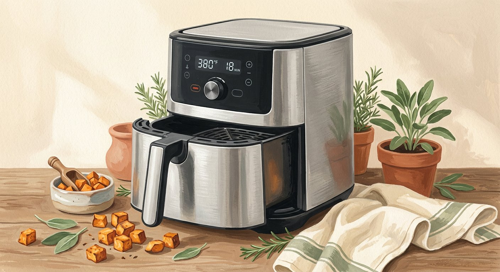

ACCESSORIES · BUYER'S NOTEBOOK
Air-fryer accessories:
worth the counter space?

Racks, liners and extra baskets promise flexibility. Whether they deliver depends on three things: fit, airflow, and whether the washing-up bill stays smaller than the benefit.
Fit before everything
Accessories are variant-specific. A rack that fits one brand's 26-quart oven can block another model's airflow or jam its drawer. Before any accessory goes in a cart, confirm the exact-model compatibility in the manufacturer's own listing or manual — not a "fits most" claim in a marketplace listing title.
Respect the airflow rule
Air fryers are convection devices: the moving air is the cooking. Anything that blocks or reroutes airflow — oversized liners, parchment that hangs loose, tall racks wedged wrong — changes how food cooks, not just where it sits. The manufacturer's care and use instructions are the authority here; never assume an accessory is safe for a specific model because it was safe for a different one.
The decision frame
| Accessory type | Potential upside | Potential downside | Check before buying |
|---|---|---|---|
| Extra racks / shelves | Cook layers at once | More parts to wash and store | Exact-model fit; official manual |
| Liners / parchment | Easier basket cleanup | Recurring cost; may affect airflow | Manufacturer care guidance |
| Baking pans / tins | More cooking functions | Occupies cooking space | Oven-safe rating and dimensions |
| Silicone baskets | Reusable, flexible | Fit varies by model | Official listing dimensions |
| Skewers / rotisserie sets | New cooking styles | Specialist use, niche storage | Included vs sold separately |
The two-question shortcut
- Does it make a meal you actually make easier? Not a meal you might make someday.
- Does the total washing-up get smaller or bigger? Count every new part, including the accessory's own storage container.
Two yeses: buy it. One yes: wait a month and see if you still want it. Zero yeses: you've saved yourself a drawer.
What this guide deliberately doesn't do
No rankings, no prices, no review scores, no "best overall" badge. Listings we link are marked sponsored and disclosed above; specifics come from the official listing pages, which are the source of truth. See what's verified and what isn't.
Official sources: Amazon Associates Operating Agreement, §5 (disclosure) · Amazon Associates Program Policies · FTC Endorsement Guides FAQ · plus the manufacturer's own listing and manual for any exact model.
← Back to the notebook